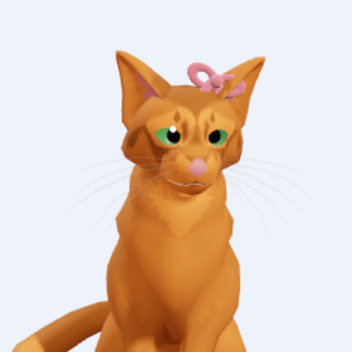

Avelã, o gatinho sobrevivente
v0.13.0O jogo da Luísa: um gatinho explora a floresta, caça, sobe em árvores e brinca com os amigos.
▶ JogarNovidades e versões anteriores 12
Novidades da 0.13
ícone novo (o rosto da Avelã, escolhido pela Luísa); missões novas: 🎣 Pescaria, 👀 Observar os cervos, 🌸 Colher flores, 🪺 Ovos de volta ao ninho, ✨ Vagalumes, 🗺️ Caça ao tesouro e 🚩 Explorador; ⏱️ Desafio: missão com cronômetro, cada acerto dá tempo a mais (se o tempo acabar não é perder); as missões ficam maiores quando tem mais gatos; brincadeira nova 🐾 Imite o líder; Atividades em duas abas (Missões e Brincadeiras); ❓ Como jogar com um mini manual.
arquivo único (abre com internet)Versões anteriores
- 0.9.8 — Cores por relação e Fase 2 mais justa
Cores por relação: anéis sob as unidades e minimapa em verde (você), azul (aliado), amarelo (neutro), vermelho (inimigo) e laranja (bichos), com legenda no minimapa e a relação escrita na dica do mouse; “por jogador” nas Opções. Fase 2 mais justa: os inimigos novos têm a mesma dificuldade do rival, começam menores e só atacam 6 minutos depois da abertura. Objetivo de construção da Fase 1 maior. (Novidades da 0.9.7: pelotões, partida em fases, flanco e largura de frente no 1º período.) - 0.9.7 — Avulsa no 1º período: pelotões e fases
Foco no 1º período (tupi e portugueses). Pelotões: forme com 4 a 10 soldados (completo = 8 + pajé/cirurgião-barbeiro + chefe de guerra/cabo), com bandeira, moral conjunta, bônus do líder e Reforçar; limite de pelotões por nível. Partida em fases: a Fase 1 numa região com 2 objetivos; cumpridos, a fronteira se abre, chegam inimigos mais fortes e aldeias neutras e todos sobem de nível. Flanco e retaguarda contam (“Flanco!”), poucos lutam ao mesmo tempo contra o mesmo alvo e o cercado se rende antes. A IA limpa e replanta mata e, no difícil, caça chefes; a rota da patrulha aparece no chão. - 0.9.6 — Avulsa mais calma e mais funda
Dificuldade em 5 níveis: Muito fácil é passivo (só se defende) e é o padrão; Fácil ataca a partir de 15 min. Tempo de paz configurável, mapa Enorme e população até 300. Níveis de civilização (3, com o nome de cada época) no centro. Exército: organização do batalhão, formas do bloco, arrastar com o botão direito para apontar a frente, Patrulhar e posturas Agressiva/Defensiva/Parada. Construção: obra sobre a mata, Limpar e Plantar mata, portões e torres nas muralhas. Grade dos prédios por natureza (Treinar, Melhorias, Gestão); melhorias de produção no jirau. Fauna e chefes (Jacarezão, Super Onça, Sucuri) com troféus. Perfil com conquistas, exportar/importar dados e registro de cada partida para baixar. - 0.9.5 — Partida avulsa
Partida avulsa (Skirmish): escolha época (P1 a P9), bioma, tamanho, água e recursos do mapa com prévia; até 8 jogadores com cultura da época, cor, equipe e dificuldade da IA; vitória por conquista, regicida, dominação de pontos ou pontos no fim do tempo. A IA joga de verdade: economia, construções e tropas da época, melhorias, defesa, exploração e ataques em ondas, em 4 níveis (Fácil a Muito difícil). Numeração passa a 0.x: o jogo está em fase de desenvolvimento. - 0.12 — Janelas, gráficos e quem assiste
quem assiste entra na caverna e sobe na árvore junto com quem está seguindo; o pique-pega virou 🤝 Pique-ajuda; o nome do dono aparece com 'de' (Gatinho · de Fulana); o menu do jogo virou janelas, com o nome do gatinho e quem está brincando lá dentro; gráficos Leve, Normal ou Bonito; o botão Jogar virou Gatinhos; o Sobre mostra a versão e os créditos em lista. - 0.11 — Atividades, toca e conexão direta
a missão terminada não volta mais quando o mundo é aberto de novo; os gatinhos dos amigos aparecem quase sem atraso; o botão Atualizar não trava mais; o PC que cuida do mundo continua cuidando depois de fechar e abrir; quando a conexão direta entre os aparelhos não dá, um repasse aqui no Brasil (🔁) entra no lugar da internet lá longe; o botão Atualizar não fica mais parado em "Atualizando…"; brincar junto ficou bem mais rápido: o aparelho de quem cuida do mundo (👑) conversa direto com os outros, sem dar a volta pela internet lá longe (⚡ no canto mostra a conexão direta); missão nova "Construir toca": escolher o lugar (no mapa, na árvore ou na caverna), buscar galhos, folhas, musgo, osso e pena; a toca cresce e fica no mundo para sempre, e os amigos ajudam; 🆘 Destravar na pausa (o gatinho preso volta para a porta da caverna, a placa do andar da árvore ou a grama); a pedra da caverna não deixa mais entrar dentro dela; 🎯 Atividades: missões e brincadeiras num lugar só; o gatinho pega coisas com a boca e leva (Pegar, Entregar, Soltar); missão nova "Achar os brinquedos": 10 brinquedos espalhados para levar até a cesta, todo mundo junto. - 0.10 — Família, câmera e carregando
tela de carregamento (e o aviso quando a internet está devagar); estradas lisas, sem traços por cima; a câmera gira com dois dedos e a bússola volta para o norte; mapa em tela cheia com pinça; botões de Ação e Pular maiores e o horário num botão só; os amigos aparecem como setinhas no mapa (somem só na procura do pique-esconde); ao começar uma brincadeira todos vêm para perto de quem chamou; a votação acaba assim que todos votam; Opções com o som e os dados e cópias; entrar na família ficou simples: no aparelho novo, "Já tenho família" (com o código) ou "Criar família nova" (com um nome); o código da família aparece grande na tela 👪 Família, com botão Copiar; Jogar pergunta quem vai brincar e onde; botão 🔄 Procurar atualização e o aviso de versão nova (e o app não fica mais preso numa versão velha). - 0.9 — Caçar, nadar, missões e brincadeiras
estatísticas do gatinho em cada mundo e no total (📊 na pausa e em Meus gatinhos): tempo jogando, distância, caças, missões, quantas vezes brincou, árvores, cavernas e pulos; bichos mais calmos: ficam parados bastante tempo e viram devagar, dá para dar a volta e chegar; o leque de visão desenhado no chão, acompanhando o relevo; o gato nada com o corpo dentro da água e ondinhas em volta; a árvore ficou bem mais alta, com a floresta lá embaixo; pique-esconde e pique-pega zumbi com os amigos (sem ganhar nem perder: é só brincar); missões (a primeira: caçar 10 comidas, juntos); sons da floresta, do rio, miados e ronronar (botão 🔊 para desligar); caçar ratos, pássaros, peixes (o gato nada!) e ovos nos ninhos — cada um vira comida; cauda de volta à original, bem mais fina; o pulo acompanha o movimento; correr bem mais rápido, com galope de verdade; a cauda balança quando o gato está parado; botão de postura (sentado, andando, correndo, espreita) e roda de gestos para conversar (lamber, rolar, dormir, alerta, miar…). - 0.8 — Família, mundos e brincar junto
a família guarda os personagens e os mundos; escolha o personagem e o mundo (ou "Continuar"); crie um mundo e convide pelo código; brinquem juntos ao vivo, cada um com o seu gatinho, com os mesmos bichos para todos; o menu mostra quem está brincando agora; dá para só assistir (seguindo alguém) e o PC pode cuidar do mundo como servidor. Sem internet, a brincadeira continua no aparelho e o que foi explorado volta para o mundo de todos depois. Com mais gente no mundo, mudar o horário vira votação. E cópias de cada gatinho e de cada mundo: dá para voltar no tempo. - 0.7 — Nuvem, deitado e instalar
Código da família (☁️ no menu) guarda os gatinhos na nuvem e leva para outro aparelho, sem nenhum dado pessoal. Joga com o celular deitado ou em pé. Botão Instalar e aviso quando já dá para jogar sem internet. - 0.6 — Árvores, cavernas, bichos, dia e noite
Árvores grandes para subir pelos galhos, com mirante no topo. Cavernas para explorar. Ratos, peixes, cervos e jacarés que fogem se virem o gatinho (à noite enxergam menos); o bote pega ratos e peixes. O mapa vai se abrindo conforme o gatinho anda. Instala na tela inicial e joga sem internet; pular em pedras e troncos. Dia, anoitecendo e noite; cauda mais fina; tamanho do laço e da gravata. - 0.5 — Vários gatinhos e a floresta
Meus gatinhos (jogar, editar, apagar) e tamanho pequeno, médio ou grande. Pular, bote, esconder, deitar e lamber refeitos; esgueirar. Floresta com relevo, rio correndo, travessias, vento nas árvores, zoom e mapa completo; o mundo fica salvo. - 0.4 — Animações de verdade
Galope, pulo, bote, comer, susto, farejar e olhar em volta, aproveitados de animações de raposa. - 0.3 — Montar no celular
Tela de montar refeita para o celular: amostras grandes em faixas, sem janelas por cima; lacinho na cabeça. - 0.2 — Gatinho 3D
Gatinho 3D animado: cor, padrão (sólido, rajado, face/corpo, meias, malhado, pontas), cor de cada parte, olhos e gravatinha ou lacinho. Modo Brincar para ver ele sentar, miar, pular, esconder, deitar e se lamber. - 0.1 — O começo
Menu, criar e editar o gatinho, mapa de teste com joystick.
O jogo publicado é sempre o mais novo; as versões 0.x anteriores ficam só na descrição.